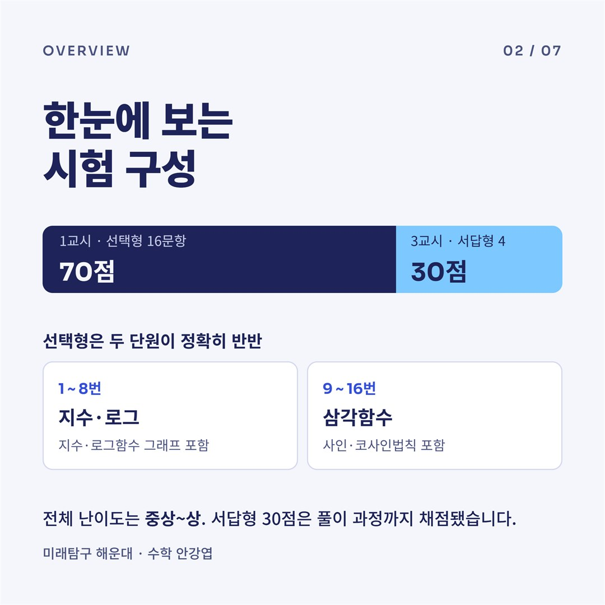
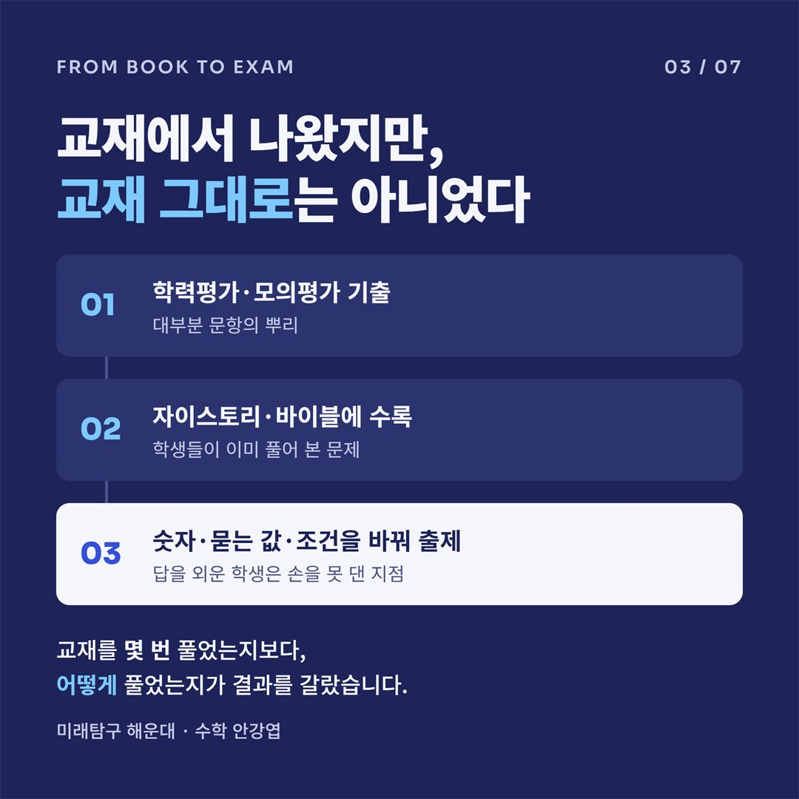
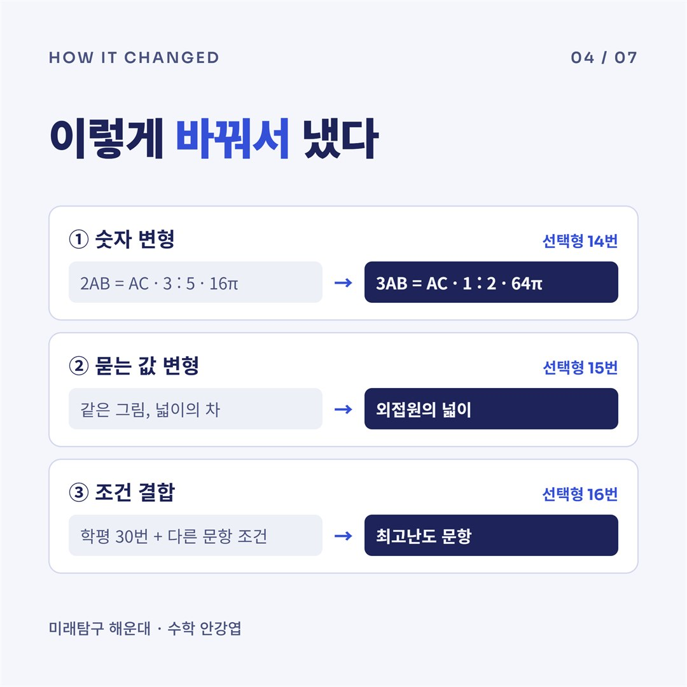
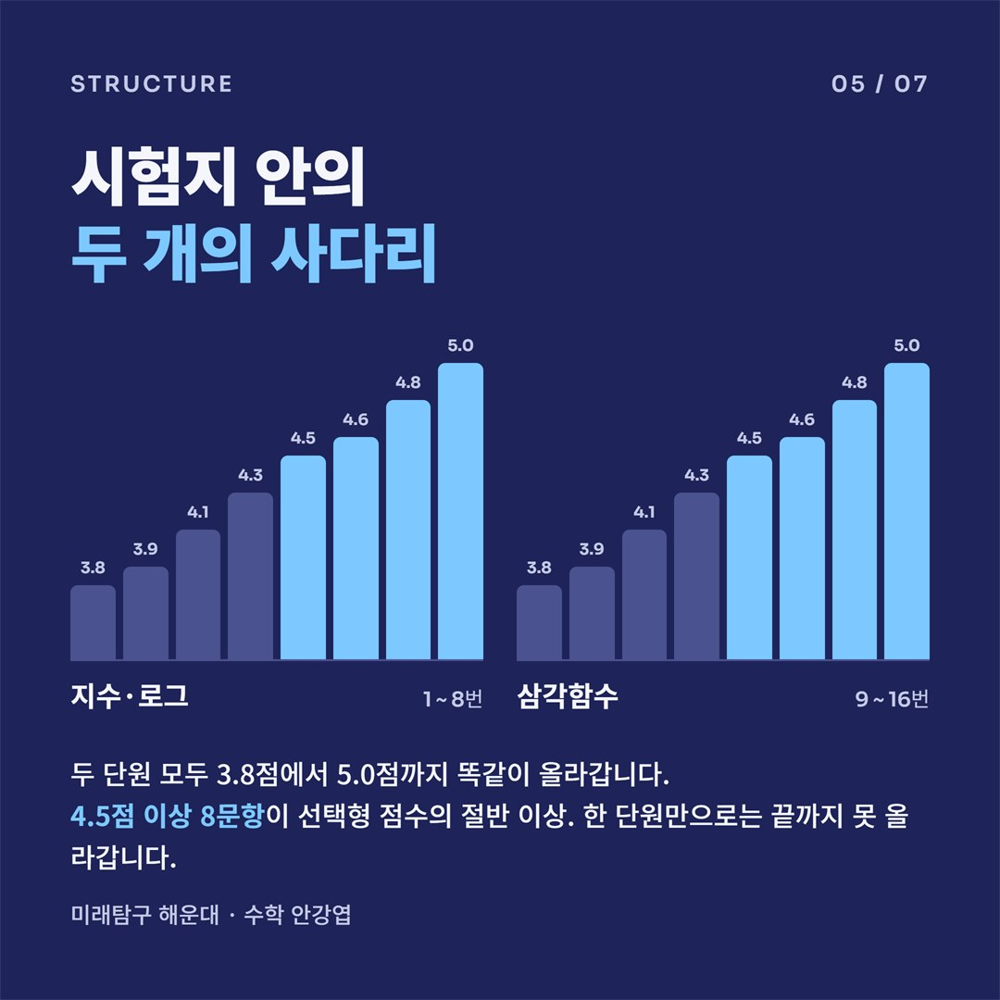
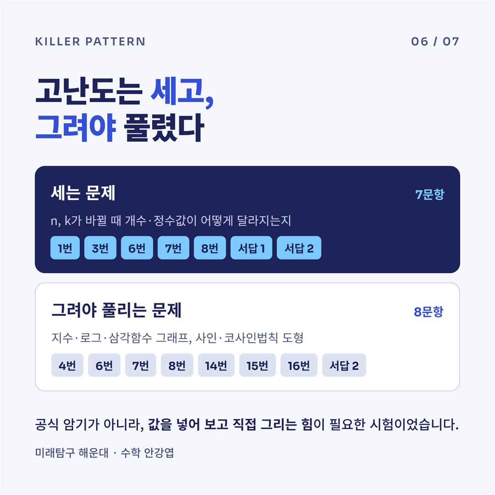
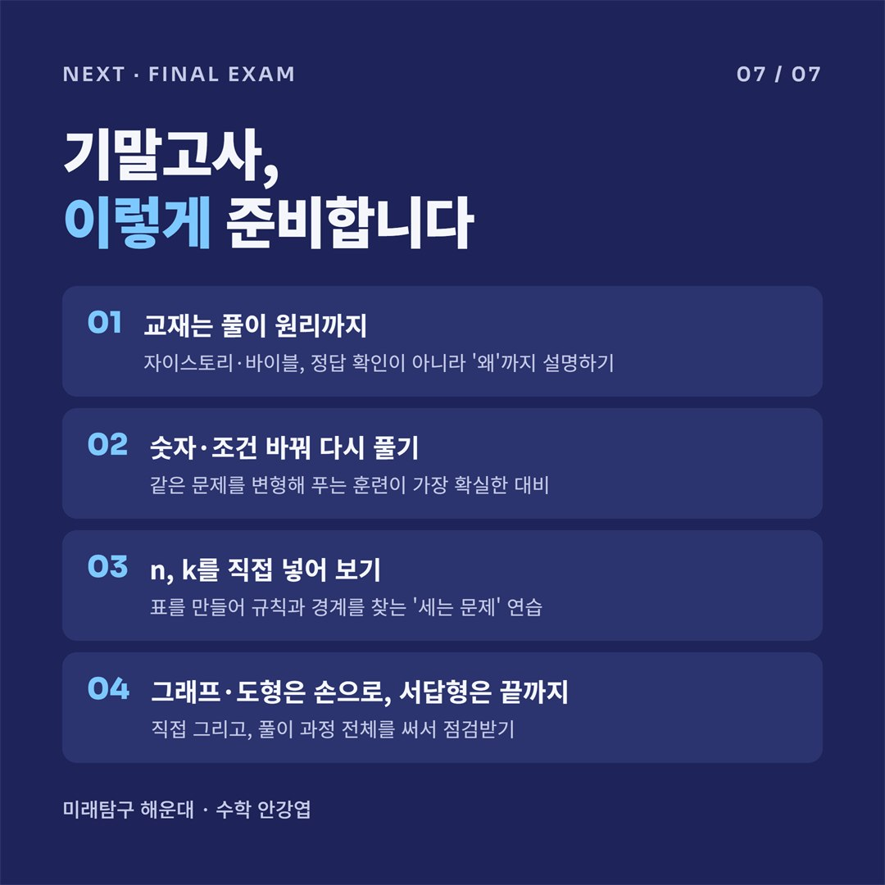

해운대고 1학년 2학기 중간고사 대수 분석: 같은 문제는 없었다, 같은 원리만 있었다

한눈에 보는 시험 구성

1교시 선택형 16문항 70점, 3교시 서답형 4문항 30점으로 구성되었습니다. 선택형은 1~8번 지수·로그, 9~16번 삼각함수로 두 단원이 정확히 반반입니다.
전체 난이도는 중상~상. 서답형 30점은 풀이 과정까지 채점됐습니다.
교재에서 나왔지만, 교재 그대로는 아니었다

대부분 문항의 뿌리는 학력평가·모의평가 기출이고, 자이스토리·바이블에 수록되어 학생들이 이미 풀어 본 문제입니다. 하지만 숫자·묻는 값·조건을 바꿔 출제되어 답을 외운 학생은 손을 못 댄 지점이 생겼습니다.
교재를 몇 번 풀었는지보다, 어떻게 풀었는지가 결과를 갈랐습니다.
이렇게 바꿔서 냈다

- 숫자 변형: 선택형 14번
- 묻는 값 변형: 선택형 15번. 같은 그림에서 넓이의 차 대신 외접원의 넓이를 묻습니다.
- 조건 결합: 선택형 16번. 학평 30번에 다른 문항의 조건을 더한 최고난도 문항입니다.
시험지 안의 두 개의 사다리

두 단원 모두 3.8점에서 5.0점까지 똑같이 올라갑니다. 4.5점 이상 8문항이 선택형 점수의 절반 이상. 한 단원만으로는 끝까지 못 올라갑니다.
고난도는 세고, 그려야 풀렸다

세는 문제는 n, k가 바뀔 때 개수·정수값이 어떻게 달라지는지를 묻고, 그려야 풀리는 문제는 지수·로그·삼각함수 그래프와 사인·코사인법칙 도형을 다룹니다.
공식 암기가 아니라, 값을 넣어 보고 직접 그리는 힘이 필요한 시험이었습니다.
기말고사, 이렇게 준비합니다

- 교재는 풀이 원리까지: 자이스토리·바이블, 정답 확인이 아니라 '왜'까지 설명하기
- 숫자·조건 바꿔 다시 풀기: 같은 문제를 변형해 푸는 훈련이 가장 확실한 대비
- n, k를 직접 넣어 보기: 표를 만들어 규칙과 경계를 찾는 '세는 문제' 연습
- 그래프·도형은 손으로, 서답형은 끝까지: 직접 그리고, 풀이 과정 전체를 써서 점검받기
해운대고 수학 내신 대비, 수업 상담이 필요하시면
언제든 문의 주세요.